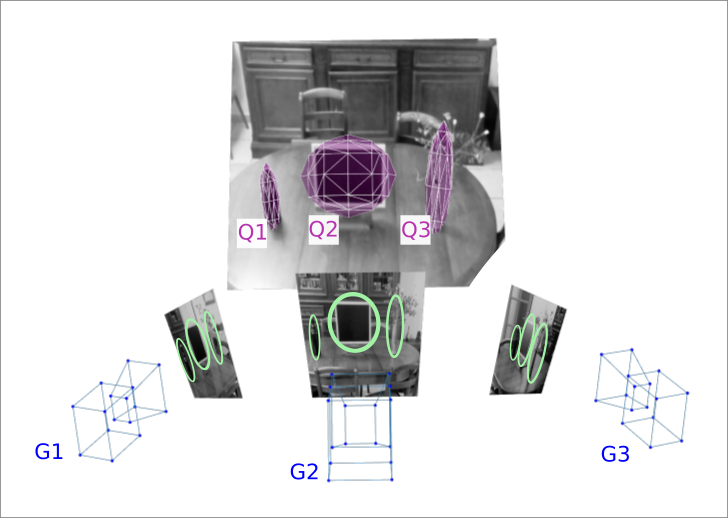
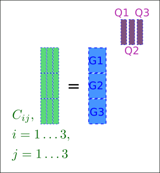
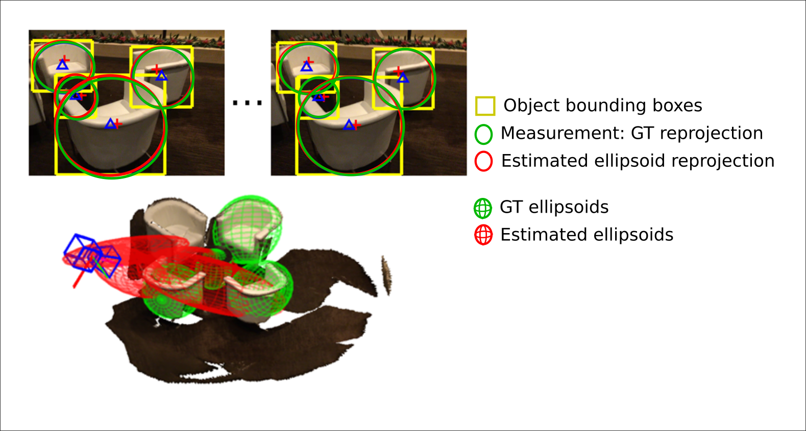
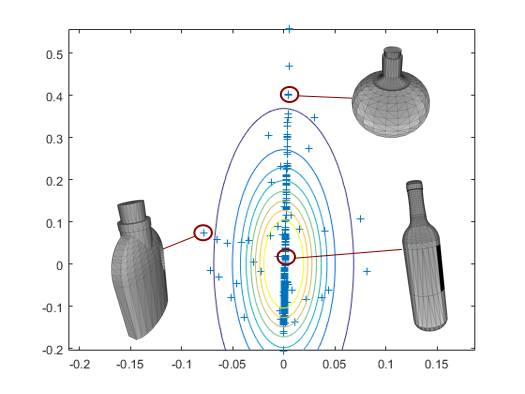
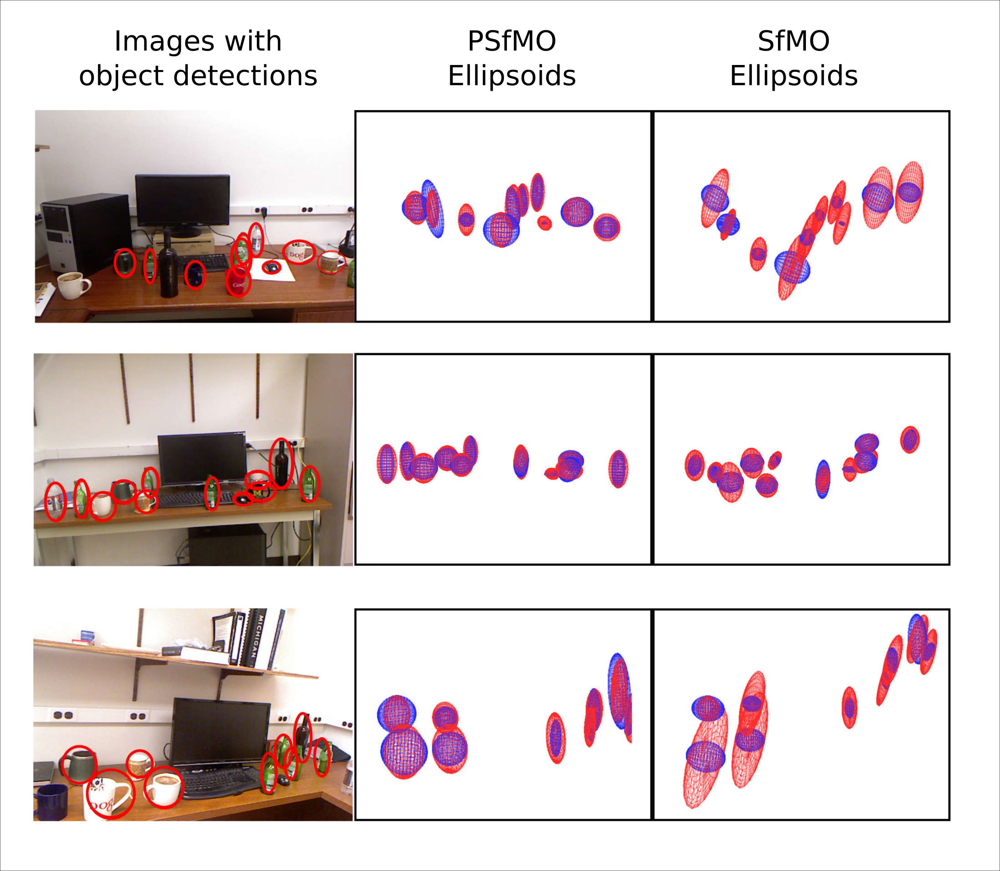

Probabilistic Structure from Motion with Object (ICCV 2017)
The Visual Geometry and Modelling group has a strong expertise in geometry and 3D reconstruction. When I joined them in 2016, their recent efforts were aimed at merging their expertise in geometry with machine learning techniques to produce representations which can model both the structure (e.g. the 3D shape) and the semantic (e.g. object labels) of the scene.
SfMO: 3D localization and occupancy from 2D detections
A 2016 published VGM work showed that is is possible to recover ellipsoids, (the purple balloon) from a set of 2D object detections (the green ellipses). This method has been called Structure from Motion with Objects (SfMO) uses standard geometry techniques.

In practice,
the mathematical formulation of SfMO uses standard geometry techniques in the flavour of the tomashi and kanade factorization. The ellipses parameters are stacked in a matrix \(C\) where each \(C_{ij}\) block contains the 6 dimension vector of the object \(j\) detected in the image \(i\). And the factorization of this matrix enables to recover the parametrization of the cameras \(G_{i}\) and the ellipsoids.

Limitations: This method is mathetically exact but relies on some assumptions, among them:
- Objects have the shape of ellipsoids
- The noise in the 2D measurements is gaussian i.e. a least square optimiser is used.
Let's highlight the induced limitations in the case of the narrow baseline between the points of view. Consider the following real example where the images are taken from a very similar point. If we check the estimated ellipsoids shown in red, we can see that their length in the direction of the camera axis shown is badly estimated. The problem is that this bad solution is optimal in the least square sense. Indeed, the reprojection of the ellipsoids, shown as red ellipses are very close to the reprojection of the GT, shown in green.

My solution : Placing a shape prior on SfMO
The motivation is to add prior information on the object shape thanks to the statistics collected on the thousands of CAD models of the ShapeNet dataset. An example of such information is that the shape of the bottle has mainly one degree of freedom which is the ratio between its diameter and its hight.

This prior can be included in the factorization by recasting the problem in the context of the standard Probabilistic Principal Component Analysis. The key observation for this reformulation is that the different parameters for the ellipsoid rotation and axis length can be separated, ie the vector of the 3D ellipsoids parameters \(Q_i\) can be decomposed as multiplication of a rotation matrix and a 3 dimension vector containing the axis length. We refer to the original paper for the mathematical details.
In practice, this prior will discouraged wrongly elongated ellipsoids. The figure below shows some results on the kinect dataset:
